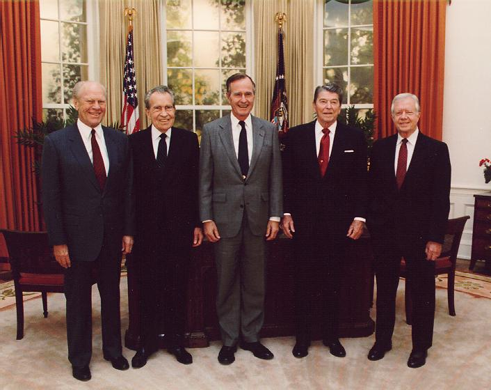
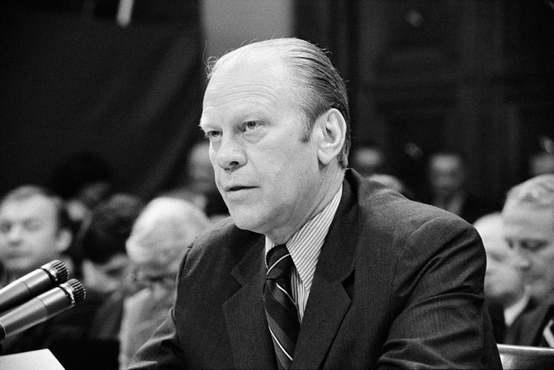
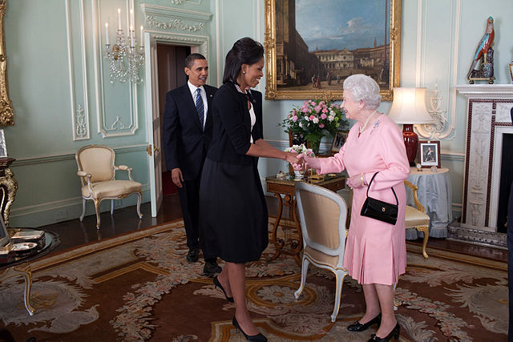
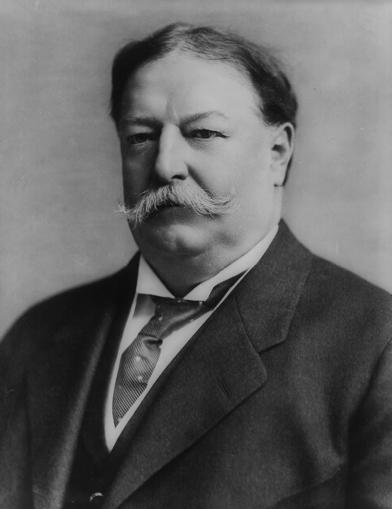
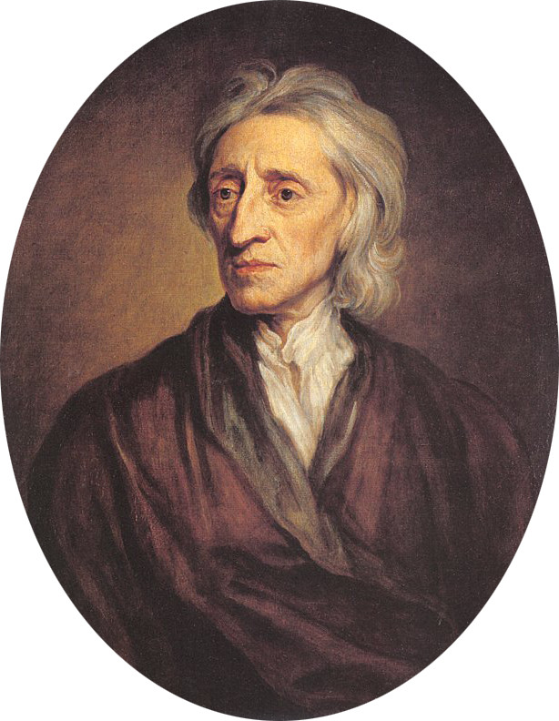
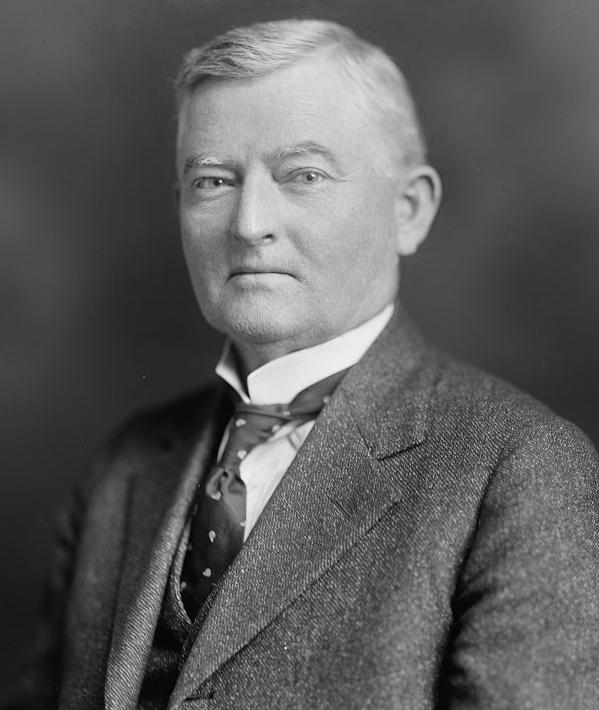

The Executive Branch
Dr. Christopher N. Lawrence
Middle Georgia State University
POLS 1101: American Government
The Executive Branch
The branch of government charged with implementing federal law and policy.
-

Subdivisions:
-
The Presidency — the president, along with the vice president, advisers, and staff.
The Bureaucracy — federal agencies that report to the president and/or Congress.
-
Presidential Powers
Four broad types of presidential power:
Formal powers — those listed in the text of the Constitution.
Inherent powers — powers based on the responsibility to “faithfully execute the laws.”
Informal powers — ways of influencing public opinion and other branches of government to support the president's goals.
Powers delegated by Congress.
Formal Presidential Powers
Power to sign or veto proposed legislation.
Formal Presidential Powers
Appointment power (subject to Senate confirmation; simple majority):
-

High-level appointments to the bureaucracy.
Ambassadors.
Generals and admirals.
Federal judges and Supreme Court justices.
-
Role of senatorial courtesy.
Formal Presidential Powers
Power to negotiate treaties (subject to Senate ratification; ⅔ majority).
- 
Power to pardon criminals or those accused of crimes.
- Controversial example: President Ford's pardon of President Nixon.
Formal Presidential Powers
Serves as commander-in-chief of the military.
Conflict over the War Powers Act of 1973.
Formal Presidential Powers
Powers as head of state.
Meets with foreign heads of state and government.
Receives ambassadors from other countries.

Formal Presidential Powers
-

Deliver information regarding the state of the union to Congress on a regular basis.
Not always done in person, particularly in the 19th century.
Now an important part of the power to persuade.
Inherent Presidential Powers
Based on the power to “take care that the laws be faithfully executed.”
Power to issue executive orders.
Power to enter into executive agreements with foreign leaders.
Executive privilege (controversial).
Other Presidential Powers
Informal powers
The power to persuade and recommend new laws to Congress (Richard Neustadt).
Delegated powers
The budget power.
Theories of Presidential Power
There are three broad perspectives on the power of the presidency:
Constitutional Theory — president's power limited to listed powers in constitutional text.
Stewardship Theory — president's power can be limited by Constitution or laws passed by Congress.
Prerogative Theory — president has power to govern in the public interest, even in violation of the law or Constitution.
The Constitutional Theory
The President's “jurisdiction must be justified and
vindicated by affirmative constitutional or statutory provision or it
does not exist.”
— William Howard Taft (1916), Our Chief
Magistrate and His Powers, p. 140.
The Stewardship Theory

“My belief was that it was
not only [the President's] right but his duty to do anything that the
needs of the Nation demanded unless such action was forbidden by the
Constitution or by the laws.”
— Theodore Roosevelt
(1913), Autobiography, p. 357.
The Prerogative Theory
The executive has the “power to act according to discretion for the
public good without the prescription of the law and sometimes even
against it…”
— John Locke (1689), Two
Treatises of Government, Book II, Chapter 14, Section 160.
The Vice Presidency
- 
Sole formal power: serve as President of the Senate; break ties as needed.
For much of American history, not a particularly valuable job.
According to one of Franklin D. Roosevelt's vice presidents, John Nance Garner, the job was “not worth a pitcher of warm piss.”
However, more recent presidents have treated their vice president as a valued adviser.
Other Presidential Advisers
Cabinet (to some extent)
Chief of Staff and White House Office
Executive Office of the President
Office of Management and Budget
Council of Economic Advisers
National Security Council
The Two Presidencies
Political scientist Aaron Widalvsky argued that the president is more effective in foreign affairs than in domestic politics:
Greater legal authority in international politics.
“Ceremonial” duties of international politics reinforce the president's stature.
Fewer organized interest and public conflicts over foreign policy.
Fewer conflicts with Congress over foreign policy.
Copyright and License
The text and narration of these slides are an original, creative work, Copyright © 2000–15 Christopher N. Lawrence. You may freely use, modify, and redistribute this slideshow under the terms of the Creative Commons Attribution-Share Alike 4.0 International license (CC BY-SA 4.0). To view a copy of this license, visit http://creativecommons.org/licenses/by-sa/4.0/ or send a letter to Creative Commons, 444 Castro Street, Suite 900, Mountain View, California, 94041, USA.
Other elements of these slides are either in the public domain (either originally or due to lapse in copyright), are U.S. government works not subject to copyright, or were licensed under the Creative Commons Attribution-Share Alike license (or a less restrictive license, the Creative Commons Attribution license) by their original creator.
Works Consulted
The following sources were consulted or used in the production of one or more of these slideshows, in addition to various primary source materials generally cited in-place or otherwise obvious from context throughout; previous editions of these works may have also been used. Any errors or omissions remain the sole responsibility of the author.
- Barbour, Christine and Gerald C. Wright. 2012. Keeping the Republic: Power and Citizenship in American Politics, Brief 4th Edition. Washington: CQ Press.
- Coleman, John J., Kenneth M. Goldstein, and William G. Howell. 2012. Cause and Consequence in American Politics. New York: Longman Pearson.
- Fiorina, Morris P., Paul E. Peterson, Bertram D. Johnson, and William G. Mayer. 2011. America's New Democracy, 6th Edition. New York: Longman Pearson.
- O'Connor, Karen, Larry J. Sabato, and Alixandra B. Yanus. 2013. American Government: Roots and Reform, 12th Edition. New York: Pearson.
- Sidlow, Edward I. and Beth Henschen. 2013. GOVT, 4th Edition. New York: Cengage Learning.
- The American National Election Studies.
- Various Wikimedia projects, including the Wikimedia Commons, Wikipedia, and Wikisource.